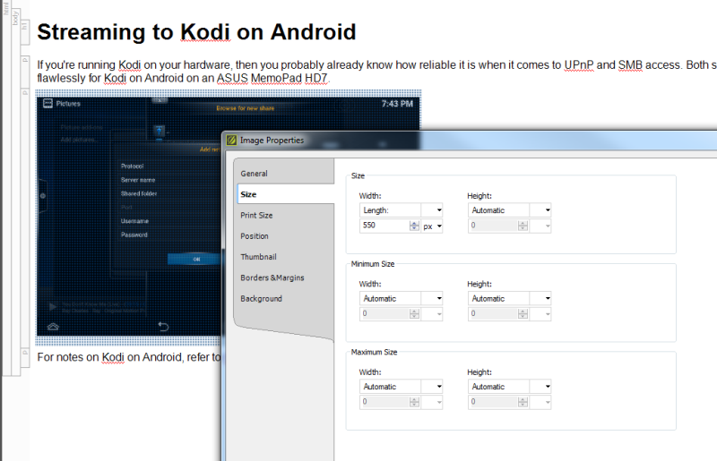
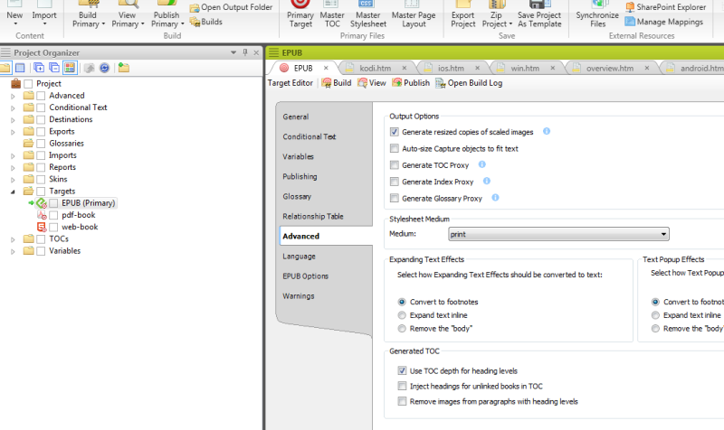
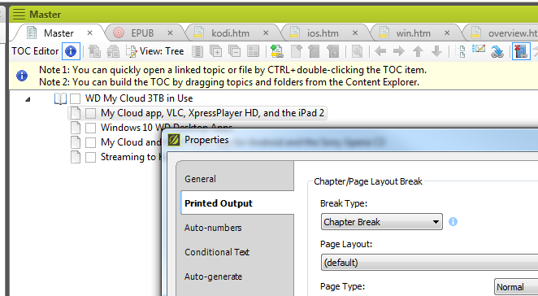
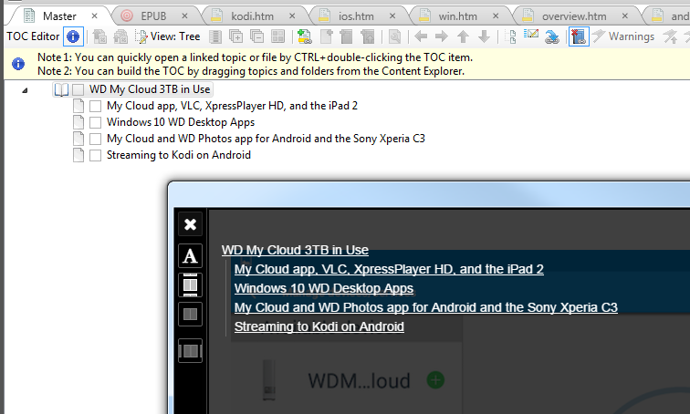
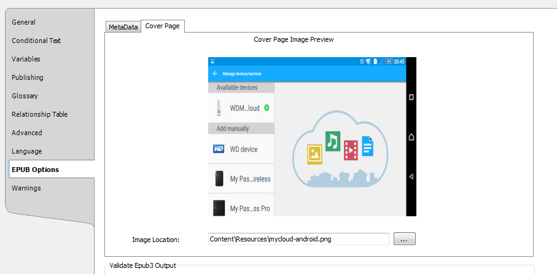
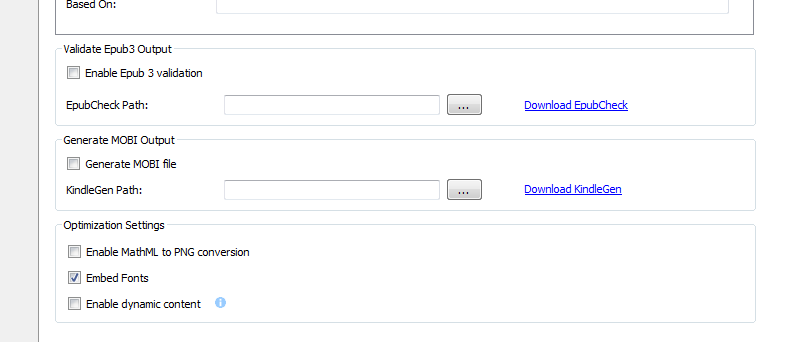

Tips on using MadCap Flare to produce EPUB output¶
Using MadCap Flare for producing EPUB output is a bit overkill, considering that you can produce EPUB from text editors, open source software such as LibreOffice, Sigil, and Calibre, as well as value-add applications such as Pages for macOS or iBooks Author. However, if you already own a license for MadCap Flare, then there’s no reason not to use the EPUB support included with the application. Moreover, Flare has considerably more flexibility in terms of formatting EPUBs when compared with creating EPUBs using Adobe InDesign or Adobe FrameMaker.
This article uses MadCap Flare 11. Flare 11 includes a Print template for Book and eBook Basic and Advanced templates, but this tutorial starts from scratch and uses the Empty template instead. The EPUB output was tested in Apple iBooks, the Kobo Glo app for Android and Windows, Calibre for Linux, a Kobo Glo ebook reader, and the Simple EPUB Reader Google Chrome app.
If you’re starting from scratch in Flare, and selected the Empty Template, the Flare project includes several folders and files that may be unnecessary, such as Advanced, Conditional Text, and Glossaries. If the eventual output is a steamy novel or thriller, then the Skins and Variables folder are pretty much unused.
For a basic EPUB novel, the only necessary folders are Targets and TOCs. If you’re writing a technical book, say for FreeBSD or Linux, then the Glossaries and Variables folders may be useful.
Tip
You can view your Flare project folders using Project Organizer.
Text formatting for EPUB in Flare uses CSS, so edit the .css files as you would with HTML or PDF output. EPUB is text-intensive and isn’t designed for too much formatting, so arguably the only CSS tags you would focus on would be the
pandh(heading) tags.For the sample text in this article, Padding and Margin properties were adjusted for the
ptag and lists to allow for more whitespace between text when viewing in an iPad or Kobo ebook reader. The text was somewhat technical in nature, so a style was also created specifically for admonitions such as Notes.Tip
You can edit the default .css from the Stylesheets folder.
Although headers and footers, running headers and footers, and page numbers are somewhat redundant for EPUB output, you can add them using the default page layout file included with an Empty Flare project.
Most EPUB readers, including the Kindle, FBReader, and iBooks apps, ignore headers, footers, and page numbers. Page numbering is assigned based on the display size and how the app handles text reflowing.
If your EPUB includes images, specify the size of the image. To prevent any image clipping when viewed in smartphones or smaller tablets, specify the width by right-clicking the inserted image and then clicking Image Properties > Size > Width. You can select Height to Automatic.
If you are also producing a PDF output of your EPUB thriller/romance, click the Print Size, and specify the dimensions there also. EPUB output uses the Size settings, but PDFs use the Print Size image settings.
By default, Flare creates a table of contents and tacks it on to the beginning of any target output, including EPUBs.
The TOC Proxy that Flare automatically creates is unnecessary for EPUBs for obvious reasons. To remove them, double-click the EPUB Target in Project Organizer, and then click Advanced. Uncheck Generate TOC Proxy.
If you don’t need an Index or Glossary for your erotic thriller, clear the Generate Index Proxy and Glossary Proxy boxes also.
EPUB output in Flare doesn’t follow the structure of individual topic files. They are read all the way through, with no page breaks or section breaks based on the TOC (Chapter 1 text flows directly to Chapter 2). If you want to structure the EPUB in a similar way to PDFs, add Chapter Breaks for each topic or “chapter” of your book.
With the TOC file open, right-click on a topic, and then click Properties. Click Printed Output > Chapter Break > OK.
Once you have added all the chapters, articles, and sections to your TOC, and nested them as needed, set the option to use TOC depth as the heading levels for the TOC.
Double-click the EPUB Target in Project Organizer, and then click Advanced. Select Use TOC depth for heading levels. If this option isn’t enabled, the TOC in the EPUB is flat without topic nesting.
The following screen capture of Simple EPUB Reader for Google Chrome shows the nested topics as designed in Flare.
Windows doesn’t have a default EPUB viewer, so Flare will prompt when you build a preview or output. Just click Open Output folder in the Builds dock and open the EPUB using any free EPUB application.
There are a lot of free desktop EPUB viewers you can install for Windows. Simple EPUB Reader app for Google Chrome, FBReader for Windows, and Calibre can be used to preview EPUB output while you are working.
Adding metadata is required when creating EPUBs, since they are used for distribution and validation. You can add metadata details such as the ISBN, publication date, and publisher by opening the EPUB Target and clicking EPUB Options.
EPUB Options in Flare also include Mobi generation for Kindle devices and Amazon publishing, and EPUB 3 validation, which uses the EpubCheck backend to verify that the EPUB is well-formed.
Note
The open source EPUB editor, Sigil, also uses EpubCheck.
The Cover Page tab in EPUB Options adds an image cover for your EPUB. Note that the rules of cover image resolution and dimensions still apply. Test the cover in different ebook readers, apps, and tablet displays to ensure that the cover is displayed properly.
To optimize the file size of the EPUB, don’t embed fonts with your Flare EPUB ouput. The 4-article EPUB used as an example in this article weighs in at a hefty 1.64 MB with fonts embedded. Without embedded fonts, the file size drops to 227 KB.
To disable embedded fonts, open the EPUB Target, click EPUB Options, and then clear the Embed Fonts option.
